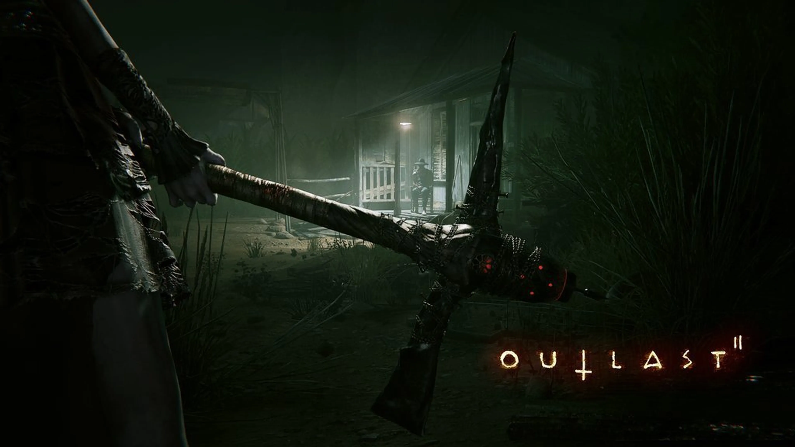

Outlas II
Año: 2017
Tamaño: 30GB
Descripción
En Outlast 2 conocerás a Sullivan Knoth y sus seguidores, que dejaron atrás nuestro cruel mundo para fundar Temple Gate, un pueblo situado en tierra salvaje, alejado de la civilización. Knoth y su rebaño se preparan para las tribulaciones del fin de los tiempos y tú te encuentras en el ojo del huracán. Eres Blake Langermann, un cámara que trabaja con su mujer, Lynn. Ambos sois periodistas de investigación dispuestos a correr riesgos y escarbar a fondo para sacar a la luz historias que nadie más se atrevería a investigar. Estáis siguiendo el rastro de unas pruebas que comienzan con el asesinato aparentemente imposible de una embarazada conocida únicamente como Jane Doe. La investigación te ha conducido al interior del desierto de Arizona, a una oscuridad tan profunda que nadie podría arrojar un atisbo de luz en ella, y con una corrupción tan intensa que volverse loco puede ser lo único sensato.
Detalles Técnicos
- Versión: Build 27.03.2018] [Re-Uploaded]
- Idioma: English, French, Italian, German, Spanish, Russian, Polish, Portuguese-Brazil, Japanese
- Audio:English, French
- Formato: ISO
TRAILER
REQUISITOS
Requisitos Mínimos
- Sistema Operativo: Windows XP / Vista / 7/8 - 64 bits
- Procesador: Intel Core i3-530
- Memoria: 4 RAM
- Gráficos: 1GB VRAM, NVIDIA Geforce GTX 260 / ATI Radeon HD 4870
- Almacenamiento: SSD 30 GB de espacio disponible
Requisitos Recomendados
- Sistema Operativo: Windows Vista/7/8 de 64 bits
- Procesador:Intel Core i5
- Memoria: 8 RAM
- Gráficos:1.5GB VRAM, NVIDIA Geforce GTX 660 / ATI Radeon HD 7850
- Almacenamiento:SSD 30 GB de espacio disponible
LINKS DE DESCARGA